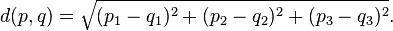

TODO : Vous devez implanter un programme simple qui utilise l'apprentissage machine pour identifier des couleurs par leur nom.
Le code a plusieurs classes, celles auquelles vous allez toucher sont :
ColorClassifier définit les méthodes add et colorName, que vous devrez implanter.
Avant de commencer à coder, vous pouvez lancer le programme et vous familiariser avec l'interface. Le Color Picker permet de sélectionner une couleur et de voir son nom en temps réel.
Pour l'instant, ça ne devrait afficher qu'un “?”, car les algorithmes n'ont pas été implantés…
Notez le champ d'entrée sous le “?”, où vous pourrez ajouter des couleurs arbitraires à l'ensemble de couleurs connues.
Prenez ensuite le temps de lire et de comprendre les classes mentionnées précédement.
Le premier algorithme à implanter est celui de l'histogramme.
Vous avez (au moins) deux méthodes à implanter dans la classe SimpleColorClassifier :
public void add(int r, int g, int b, String name) { ... }
Cette méthode se chargera d'ajouter une couleur au this.cube dans la bonne section selon les valeurs r,g,b passées en paramètre.
Notez que le nombre de sections est une variable, this.sections (un int).
Notez également que this.cube[x][y][z] est un ArrayList de String. On peut donc faire this.cube[x][y][z].add("Bonjour") pour ajouter le nom “Bonjour” dans la section (x,y,z).
public String colorName(int r, int g, int b) { ... }
Cette méthode se chargera de donner le nom d'une couleur selon ce qui se trouve dans la section du cube correspondant aux paramètres r, g et b.
Indice : Le code de classification dans une section donnée de (r, g, b) va se répéter entre add et colorName, ça peut être une bonne idée d'en faire une méthode de la classe.
Vous pouvez utiliser la fonction ColorClassifier.majorityVote(ArrayList<String> arr) pour obtenir le résultat du vote majoritaire sur un ArrayList de noms de couleurs.
Une fois que votre code fonctionne, vous pouvez le tester sur des plus gros ensembles de données que l'ensemble de base. (Voir la section sur les ensembles de données)
Le deuxième algorithme à implanter est celui des K plus proches voisins (K nearest neighbors).
Encore une fois, vous devrez implanter les deux mêmes méthodes pour la classe KNNColorClassifier, en plus d'une méthode de comparaison de deux couleurs qui sera utile :
Puisqu'on n'a plus à gérer un cube d'ArrayList, le code de cette fonction devrait être plus simple.
La classe possède un ArrayList de ColorLabel, this.colors, où vous pouvez simplement stocker les couleurs.
Cette méthode sera utile pour savoir quels sont les voisins les plus proches d'une couleur donnée.
Vous trouverez dans la classe ColorLabel la fonction :
public int compareTo(ColorLabel other) { ... }
Qui devra retourner la distance Euclidienne entre deux couleurs.
Rappelez-vous que les couleurs peuvent être vues comme des vecteurs à 3 valeurs (r, g, b), la formule de la distance sera donc :

Cette méthode sera un peu plus complexe que les autres : vous allez devoir trouver les K plus proches voisins d'une couleur donnée.
Pour cela, vous devrez donc :
this.k éléments ayant la plus faible distance avec la couleur inconnueSi vous vous rendez ici en si peu de temps, on a potentiellement sous-estimé vos talents en programmation et en algorithmie…
Essayez de modifier l'algorithme des K plus proches voisins pour tenir compte de la distance de chaque couleur lors du vote !
Les K plus proches voisins et les K plus proches voisins pondérés donnent des résultats satisfaisants, mais il y a toujours place à l'amélioration !
Sur le HugeDataset, vous remarquez que la performance des algorithmes implantés laisse plutôt à désirer… Essayez de les optimiser pour éviter de refaire en boucle les mêmes calculs.
On dispose de trois ensembles de données pour tester les algorithmes :
Référence du sondage : http://blog.xkcd.com/2010/05/03/color-survey-results/
Vous remarquerez que le choix de l'ensemble de données change drastiquement les résultats ainsi que la vitesse du programme.
Pour choisir l'ensemble utilisé, changez la classe utilisée dans :
0 // Fichier : AnyColourYouLike.java
1 package anycolouryoulike;
2
3 public class AnyColorYouLike {
4
5 public static void main(String[] args) {
6
7 Window w = new Window(new SimpleColorClassifier(SimpleDataset.colors(), 2));
8 }
9 }